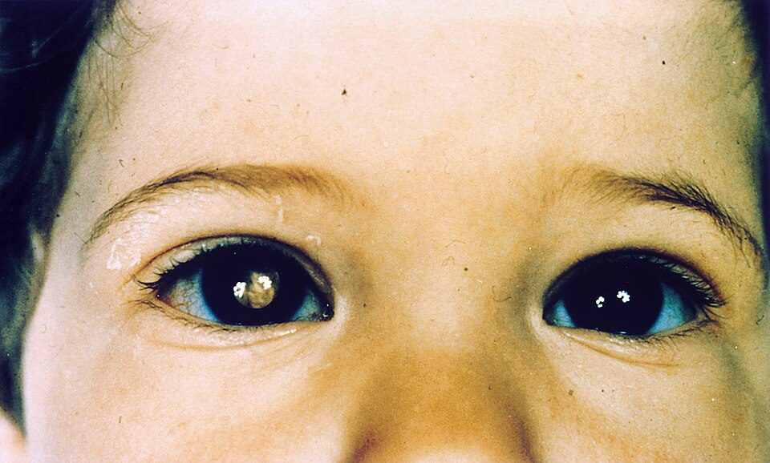

Información divulgativa. No sustituye la valoración de tu equipo médico ni sirve para decidir un tratamiento.


En resumen
| Frecuencia | 1 de cada 15.000-20.000 nacidos vivos; unos 8.000 casos al año en el mundo |
| Quién | Niños menores de 5 años, casi siempre menores de 2 |
| Genética | Gen RB1: 40 % hereditario (bilateral, a edades más tempranas) |
| Señal | Leucocoria (reflejo blanco en la pupila) y estrabismo |
| Curación | Más del 95 % en Europa; menos del 30 % en muchos países de bajos ingresos |
Qué es
Tumor de la retina en desarrollo. Su estudio dio lugar a la hipótesis de los "dos impactos" de Alfred Knudson (1971): hacen falta dos mutaciones del gen RB1 para que aparezca. En las formas hereditarias, el niño nace con una ya presente, por lo que los tumores son bilaterales y precoces. RB1 fue el primer gen supresor de tumores identificado (1986).
Señales
- Leucocoria: pupila blanca, a menudo vista en una foto con flash en lugar del ojo rojo habitual.
- Estrabismo (ojo desviado).
- Ojo rojo, doloroso o con mala visión.
Ante una pupila blanca, consultar al pediatra u oftalmólogo sin demora.
Tratamiento
En unidades especializadas (en España, centros de referencia CSUR): - Quimioterapia intraarterial (directamente en la arteria del ojo) o intravítrea. - Quimioterapia sistémica, láser, crioterapia, braquiterapia. - Enucleación si el tumor es muy grande o el ojo no tiene visión útil. - Estudio genético del niño y la familia; revisiones oftalmológicas de los hermanos.
Después
Los portadores de mutación de RB1 tienen más riesgo de segundos tumores (sobre todo osteosarcoma y sarcomas, y melanoma), por lo que deben evitar radiaciones innecesarias y hacer seguimiento a largo plazo.
Ver también: Cáncer infantil, Melanoma uveal, Osteosarcoma.
Historia · Medicapedia
Retinoblastoma en la historia de la medicina
Cómo se descubrió, quién lo investigó y cómo cambió su tratamiento a lo largo de los siglos, contado en Medicapedia, nuestra web hermana de historia de la medicina.
Leer la historia en Medicapedia ↗Fuentes
- Dimaras H, et al. Retinoblastoma. Nat Rev Dis Primers. 2015;1:15021. doi:10.1038/nrdp.2015.21
- Knudson AG. Mutation and cancer: statistical study of retinoblastoma. Proc Natl Acad Sci USA. 1971;68:820-823. doi:10.1073/pnas.68.4.820
- Global Retinoblastoma Study Group. Global retinoblastoma presentation and analysis by national income level. JAMA Oncol. 2020;6:685-695.
Guías y documentos recientes (2024-2026)
- SEOM y REDECAN. Las cifras del cáncer en España 2026. Madrid: SEOM; 2026. seom.org
- SIOP Europe y Childhood Cancer International Europe. European Standards of Care for Children and Adolescents with Cancer 2025. Viena; 2025. ccieurope.eu
Fuentes revisadas y actualizadas en noviembre de 2026.